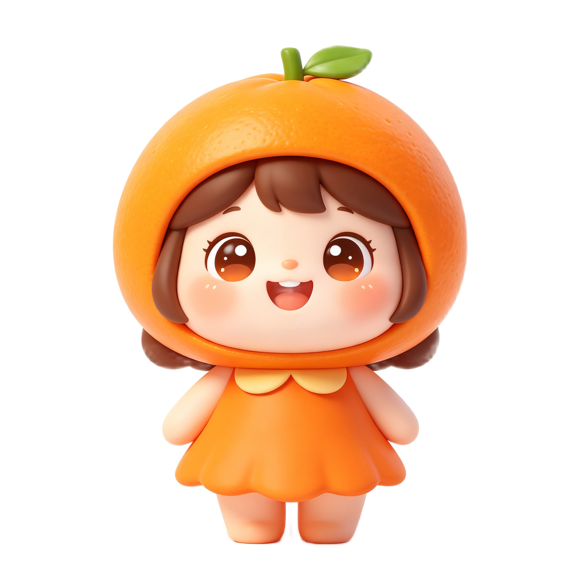
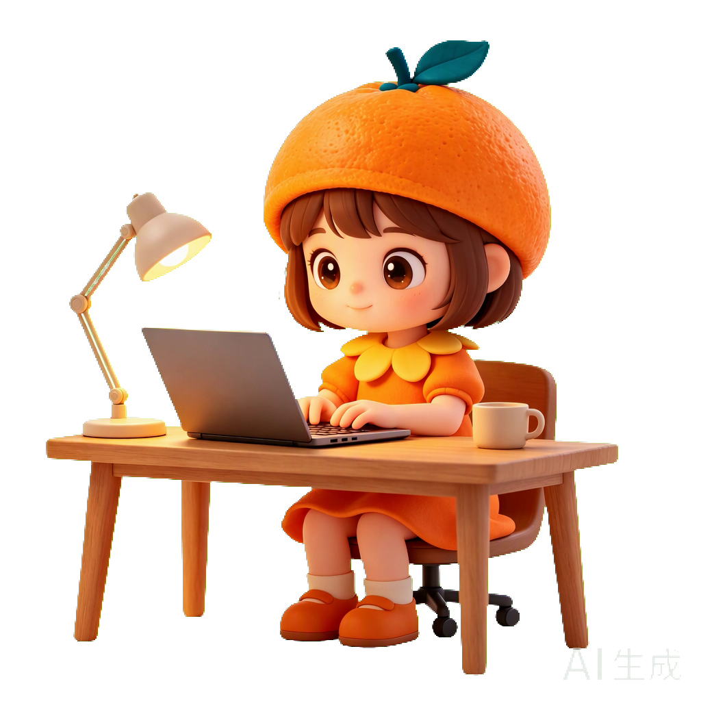
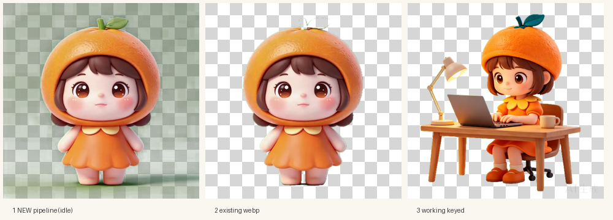
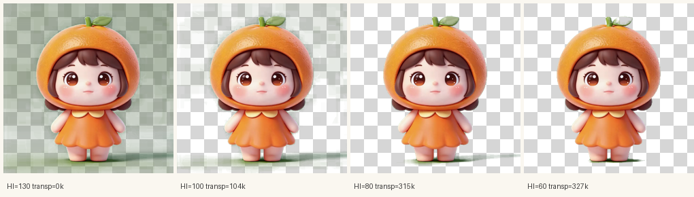

DeskMateOverlay.tsx:715 → XiaojuMascot）用的是站姿全身小桔；
全息屏里那个伏案工作的形象只出现在「小桔在忙」卡片（AgencyPanel.tsx:126/132），
而且是两张静态 PNG 靠 CSS 交替，本身也不是动态。下面按 200px 实际显示尺寸并排给你看差别。

petScale
从 1.0 提到 1.25 左右，或者把书桌下缘裁掉一点。这个先不擅自改，等你定。
rgb(3,80,91)，与绿幕的 rgb(15,245,10) 色相差 80° 以上，
键控时不会再被一起打掉。右下角「AI生成」水印在抠像阶段按区域强制透明（水印只压在纯背景上，不碰角色）。



| clip | 触发条件 | 帧数 | 状态 |
|---|---|---|---|
idle | 默认 / 走动 | 121 | 已有，但是站姿形象，换形象后要重做 |
working | 运行中 / 专注 | 0 | 源片未生成 |
thinking | 思考中 | 0 | 源片未生成 |
happy | laugh / cheer / 情绪 happy | 0 | 源片未生成 |
cry | expression=cry | 0 | 源片未生成（眼泪 SVG 已可用） |
angry | expression=angry | 0 | 源片未生成 |
shock | expression=shock | 0 | 源片未生成 |
sleepy | expression=sleepy | 0 | 源片未生成 |
shy | expression=shy | 0 | 源片未生成 |
retryable=false，所以本轮没有重试。
工作区额度显示还有 72.68 credits，但视频这条通道报的就是额度不足 —— 需要你在 QwenWork 里确认充值或切换可用额度后我再接着跑。
在此之前，working 等 clip 的 frameCount 保持 0，前端继续走 PNG 换脸回退，桌宠不会白屏。
scripts/xj_clip_build.py —— 一条命令把绿幕 mp4 变成透明序列帧并写 manifest：
python3 scripts/xj_clip_build.py <video.mp4> working --fps 24 --size 720 [--dry-run]
已用现有 idle 源片验证：121 帧拆帧 → 键控 → 绿边抑制 → 水印区强制透明 → 居中裁方 → 720² 透明 WebP。
环境踩坑（已写进脚本注释）：
① 本机 ~/.local/bin/ffmpeg 是 x86_64，arm64 上直接跑报 Bad CPU type；改用 pip install imageio-ffmpeg 带的 aarch64 ffmpeg 9.0。
② PIL 没有 numpy 时的向量化抠像：只能用 ImageMath.lambda_eval，且函数要 a["max"] 取、没有 clamp、没有 //、标量减图像会崩。
③ 让模型「去水印」会把整张图重绘成别的角色，不可用；改为抠像阶段按区域强制透明。
| 问题 | 选项 |
|---|---|
| 工作形象自带书桌，200px 下脸偏小 | A 提高默认 petScale 到 1.25；B 裁掉书桌下缘只留上半身；C 先不动，看真机效果再说 |
| 旧 idle 的 121 帧站姿素材怎么处理 | A 换形象后整套重做（推荐，风格统一）；B 保留站姿只给忙的时候用工作形象（两种形态并存会跳） |